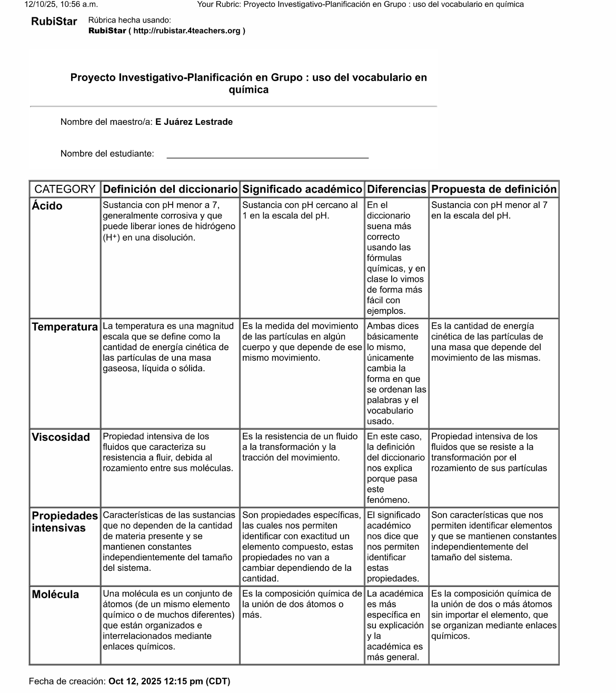
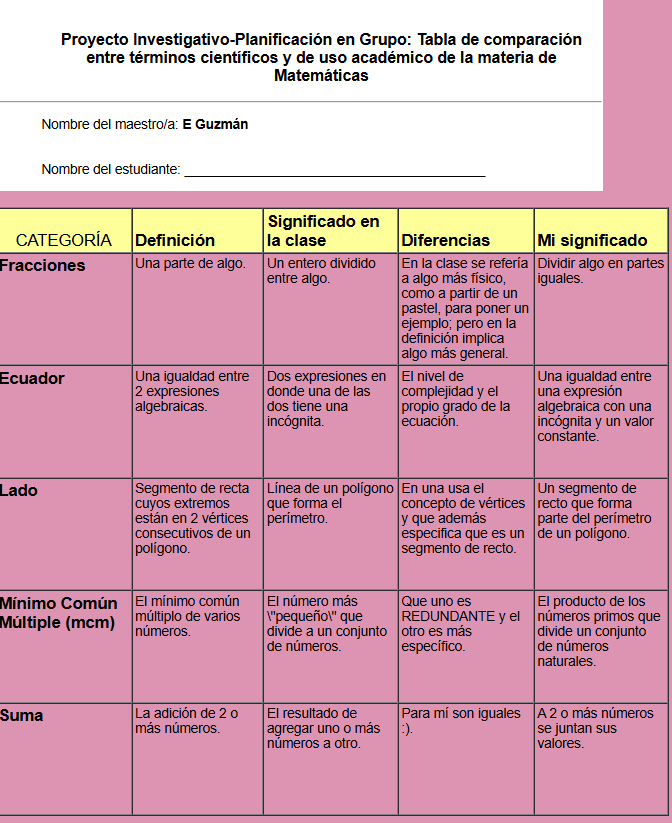
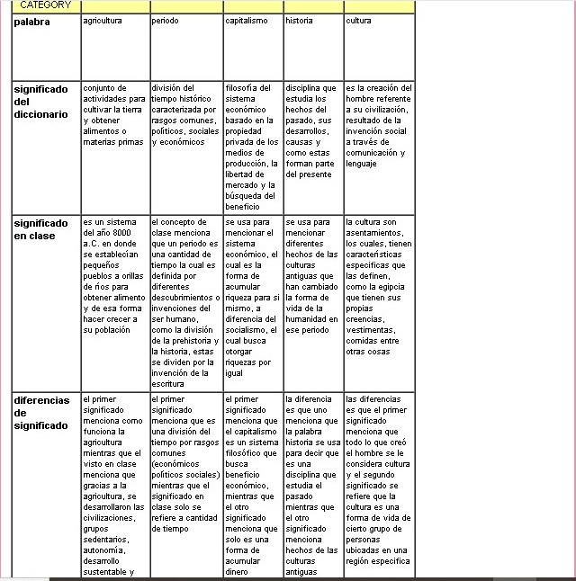

Los términos que usamos
Planeación
Diagnóstico del contexto
El grupo de tercero de secundaria del Instituto Alejandría está conformado por nueve estudiantes,
dos mujeres y siete hombres. Uno de ellos es de nuevo ingreso y presenta un rezago significativo
derivado de, según argumenta, escaso trabajo sobre los contenidos en la escuela de la que proviene; esta situación
se refleja en su desempeño y en la necesidad de un acompañamiento más cercano.
En términos generales, el grupo presenta deficiencias importantes en el uso de terminología disciplinar,
particularmente en materias del área de ciencias. Durante su primer año de secundaria tuvieron tres cambios
de docente en Biología y Geografía, lo que interrumpió la continuidad curricular. En Matemáticas, por decisión
del docente titular, se priorizó la preparación para concursos en lugar del avance de los contenidos
programáticos, lo que dejó bases débiles que ahora afectan su desempeño en la materia; así mismo, en Química requieren terminología
precisa para avanzar pues, debido a las deficiencias mencionadas, no logran tener un desempeño óptimo.
Desde la asignatura de Español se decidió aprovechar estas dificultades como una oportunidad para introducir
un proyecto lingüístico orientado a mejorar la precisión léxica, la comprensión conceptual y el uso fundamentado
del lenguaje académico. Para ello, se diseñó una secuencia en torno a tres ejes: 1) reconocimiento de los
diccionarios, sus tipos y su utilidad actual; 2) introducción a procesos básicos de investigación de campo
(observación etnográfica, entrevistas dirigidas, comparación de registros orales y escritos); y
3) presentación de resultados mediante productos de divulgación para la comunidad escolar.
Como parte de la fase de divulgación, se ofrecieron
diversas opciones tecnológicas para la presentación final, eligiendo cada equipo plataformas distintas:
un equipo trabajó con Spatial para construir un espacio virtual expositivo; otro empleó
Heyzine para generar un diccionario en línea de términos matemáticos; el tercer equipo combinó
Wakelet con Formative para integrar un glosario de estudio y ejercicios aplicados como previo a los exaémens trimestrales.
Objetivos de aprendizaje
Objetivo general: desarrollar la precisión terminológica, la comprensión conceptual y la
capacidad de divulgación mediante una investigación lingüística que permita analizar críticamente los términos
usados en el contexto escolar del Instituto Alejandría, esto buscando los siguientes objetivos específicos:
- Reconocer distintos tipos de diccionarios y su utilidad en procesos de consulta y redacción académica.
- Aplicar técnicas básicas de investigación de campo para analizar el uso real de términos en la comunidad escolar.
- Comparar usos correctos, incorrectos y ambiguos de términos seleccionados.
- Construir definiciones claras, ejemplos y contraejemplos que evidencien comprensión profunda.
- Presentar resultados mediante un producto digital de divulgación dirigido a la comunidad escolar.
Justificación del uso de TIC
El uso de TIC fue fundamental para ampliar el alcance del proyecto y acercar a los estudiantes a herramientas
contemporáneas de divulgación. Plataformas como >Spatial y Heyzine permitieron explorar modelos de presentación
interactiva, mientras que Wakelet y Formative facilitaron la organización sistemática de evidencias y productos
lingüísticos. Estas herramientas potencian la investigación autónoma, permiten visualizar procesos de manera
más clara y acercan a los estudiantes a prácticas digitales de comunicación profesional.
Selección de herramientas digitales
- Spatial: creación de espacios virtuales de divulgación.
- Heyzine: elaboración de revista digital interactiva.
- Wakelet + Formative: integración de evidencias, actividades y presentaciones finales.
- Rubistar: creación de tablas comparativas.
Secuencia de actividades
Sesión 1 — Introducción al proyecto
Exploración de términos mal usados, confusos o ambiguos en el entorno escolar.
Sesión 2 — Tipos de diccionarios
Revisión comparativa entre diccionarios generales, enciclopédicos, etimológicos
y de especialidad.
Sesión 3 — Observación lingüística
Registro en campo de expresiones dudosas o mal empleadas y recopilación de ejemplos reales.
Sesión 4 — Entrevista dirigida
Aplicación de entrevistas, observaciones etnográficas y comparación de notas, según el caso de cada equipo.
Sesión 5 — Comparación de usos
Contraste entre definiciones formales y usos cotidianos del término seleccionado usando Rubistar.
Sesión 6 — Redacción del glosario preliminar
Construcción colaborativa de propuestas de definición.
Sesión 7 — Trabajo de corpus
Elaboración del corpus de trabajo completo.
Sesión 8 — Elección de plataforma final
Presentación de Spatial, Heyzine y Wakelet-Formative para elegir medio de exposición.
Sesión 9 — Integración del producto final
Diseño del espacio expositivo, diccionario y glosario con los resultados del proyecto.
Sesión 10 — Exposición interna
Socialización con el grupo y retroalimentación sobre claridad y divulgación.
Sesión 11 — Ajustes finales
Correcciones y depuración del glosario y del producto digital.
Sesión 12 — Presentación a la comunidad
Exposición del proyecto desde el entorno digital elegido.
Implementación
La implementación inició con la formación de equipos de trabajo, conformados inicialmente por tres integrantes
cada uno. No obstante, fue necesario reubicar a uno de los alumnos debido a roces previos con una de sus
compañeras, lo que permitía evitar tensiones innecesarias y asegurar un ambiente colaborativo adecuado para
la investigación. Una vez reorganizados los equipos, se estableció un enfoque pragmático centrado en analizar
el uso real de los términos en situaciones auténticas del entorno escolar.
La primera fase consistió en la exploración de diccionarios especializados para introducir a los estudiantes a
las diferencias entre obras generales y obras de consulta técnica. Se revisaron materiales como el
Diccionario de Uso del Español de María Moliner, el Diccionario Crítico Etimológico de
Corominas, así como diccionarios escolares dedicados a la terminología de asignaturas como Matemáticas, Química
e Historia. Este proceso permitió que los equipos comprendieran los matices conceptuales y el peso del lenguaje
preciso en contextos académicos.
El equipo que eligió trabajar con la asignatura de Historia decidió centrar su investigación en las diferencias
entre las notas de clase tomadas por los estudiantes y las sesiones grabadas durante las explicaciones del docente.
Su análisis se enfocó en observar cómo ciertas palabras o conceptos eran simplificados, ampliados o modificados
durante la práctica docente. Para la divulgación de sus resultados, optaron por construir una exposición digital
en la plataforma Spatial, en la que integraron su proceso de investigación y reflexiones.
El equipo que seleccionó Matemáticas intentó llevar a cabo un ejercicio de observación etnográfica dentro de sus
posibilidades. Además de registrar los usos terminológicos de la materia, identificaron dinámicas interaccionales
relevantes: el docente hacía distinciones preferenciales en la manera en que respondía a las dudas o en la forma de
dirigirse a ciertos estudiantes, no sólo entre grupos —lo cual es esperable debido a las adaptaciones pedagógicas
necesarias—, sino entre alumnos del mismo grupo. Desde una mirada lingüística y pragmática, los estudiantes señalaron
que estas diferencias influían en cómo ciertos términos o procedimientos eran explicados. Para su presentación final,
elaboraron un diccionario de Matemáticas y lo publicaron como revista digital
interactiva mediante Heyzine.
El equipo que trabajó la asignatura de Química realizó una entrevista dirigida a su docente, comparándola con las
grabaciones de clase recopiladas durante varias sesiones. Con base en ello, elaboraron un glosario organizado en
Wakelet, donde integraron un glosario y añadieron su proceso de investigación.
Además, desarrollaron un formulario en Formative como examen diagnóstico que permitiera evidenciar
el nivel inicial de comprensión terminológica. Su intención es actualizar el Wakelet de forma trimestral,
convirtiéndolo en una herramienta de estudio acumulativa, y al mismo tiempo modificar su Formative para utilizarlo como
instrumento preparatorio antes de cada evaluación parcial de la materia.
Como parte del proceso investigativo, todos los equipos grabaron sesiones de clase en audio para contrastar el uso
práctico de los términos con sus definiciones académicas, sin embargo, tales grabaciones no serán reproducidas aquí por confidencialidad de los docentes y de los estudiantes de otros grupos. También es importante señalar que todo el trabajo investigativo se realizó en el aula, en las libretas, por lo que las evidencias de trabajo se centran en fotos de esas librestas, algunos documnentos hechos con Rubistar, plataforma usada para realizar las tablas comparativas entre términos y, por supuesto, los productos finales.
Esta investigación permitió a los alumnos la identificación de tensiones entre el discurso pedagógico y el registro disciplinar formal, es decir, entre lo que sus docentes enseñan y cómo lo enseñan desde su adaptación lingüística, fortaleciendo la comprensión de que el lenguaje
académico requiere precisión, intención comunicativa y una conciencia crítica sobre su uso.
Evidencias de la participación y respuesta de los estudiantes
Identificación de tipos de ruido en la comunicación dentro de las clases analizadas
Autoevalución intermedia: reflexión sobre la importancia de su proyecto
Tablas de comparación entre términos y significados elaboradas con Rubistar



Transcripción de entrevista
Tabla de análisis de la pertenencia lingüística de la definición
Documentación
Wakelet — Investigación y glosario
Diccionario de matemáticas — Heyzine
Presentación en Spatial
Evaluación
Debido a diversos contratiempos institucionales —entre ellos la organización de ceremonias, actividades
conmemorativas y la preparación de la celebración de Halloween— el desarrollo del proyecto se vio interrumpido
en múltiples ocasiones. Esto generó que el alumnado no lograra sentir que la calidad de sus productos finales
fuera suficientemente representativa de su desempeño académico. En respuesta, y tras un acuerdo colectivo, se
determinó que la evaluación principal del proyecto sería un examen de conocimientos, mientras que el producto
elaborado por cada equipo aportaría únicamente un punto adicional a la calificación final.
La decisión fue pertinente considerando las circunstancias. El examen permitió valorar la comprensión conceptual
sobre diccionarios, terminología disciplinar y procesos de investigación lingüística, mientras que los productos
digitales reflejaron el nivel de aplicación práctica alcanzado. Los resultados fueron, en general, positivos:
únicamente dos estudiantes reprobaron el examen, mientras que el resto obtuvo calificaciones aprobatorias que,
sumadas al punto correspondiente al proyecto, generaron un promedio estable dentro del grupo.
Resultados cuantitativos
| Alumno |
Calificación final |
Observaciones |
| Gaspar Rivas, Daniela Alejandra |
7.0 |
Comprensión básica del contenido; participación constante. |
| González Benítez, César Francisco |
8.0 |
Buen dominio de conceptos y exposición clara en equipo. |
| González Lazcano, Alexander |
6.0 |
Dificultades de estudio; desempeño estable en actividades grupales. |
| Guzmán Campos, Enrique |
8.0 |
Aplicación correcta del contenido y participación destacada. |
| Juárez Lestrade, Erick |
9.0 |
Excelente comprensión, uso preciso de terminología. |
| Luna Del Castillo, Daniel |
8.0 |
Resolución adecuada del examen y buena integración en equipo. |
| Pineda Limón, Fernando |
7.0 |
Buen análisis aunque con fallos en ejemplos. |
| Serrano Ibarra, José Emiliano |
6.0 |
Dificultades para argumentar definiciones y contrastes. |
Promedio general del grupo: 7.37/10 |
Alumnos con desempeño insuficiente: 2
Resultados cualitativos
El examen permitió constatar que, pese a las interrupciones, la mayoría del alumnado adquirió nociones claras
sobre el uso responsable de la terminología disciplinar, la diferenciación entre definición y ejemplo, y la
importancia de contrastar fuentes. De igual forma, los productos digitales aportaron evidencia del proceso de
investigación aplicado por cada equipo, mostrando un esfuerzo genuino por comprender la dimensión práctica del
lenguaje académico.
Los estudiantes identificaron la diferencia entre el uso cotidiano y el uso técnico de muchos conceptos,
y comprendieron la importancia de emplear vocabulario preciso en materias como química, matemáticas o historia.
Aunque algunos productos quedaron incompletos, el proceso de trabajo colaborativo, las entrevistas realizadas,
la comparación de diccionarios y las grabaciones de clase representaron avances significativos en su alfabetización
lingüística y disciplinar.
Rúbrica cualitativa del examen
| Criterio |
Insuficiente (0–5) |
Básico (6–7) |
Adecuado (8) |
Destacado (9–10) |
| Comprensión conceptual |
Respuestas incorrectas o irrelevantes. |
Muestra comprensión parcial; errores frecuentes. |
Comprensión clara con ligeros detalles. |
Dominio claro y preciso de los conceptos. |
| Aplicación de ejemplos |
No incluye ejemplos o son erróneos. |
Ejemplos simples o ambiguos. |
Ejemplos correctos y pertinentes. |
Ejemplos precisos y contextualizados. |
| Diferenciación entre uso técnico y cotidiano |
No distingue las diferencias. |
Diferenciación limitada. |
Identifica las diferencias con claridad. |
Explica diferencias con profundidad y corrección. |
| Manejo de vocabulario |
Uso incorrecto o impreciso. |
Uso general pero con fallos. |
Vocabulario adecuado y pertinente. |
Uso preciso, técnico y completamente contextualizado. |
Evidencia de exámenes
Reflexión
Uno de los mayores aportes de este proyecto fue permitir que los estudiantes comprendieran que el lenguaje
construye, organiza y orienta su experiencia escolar diaria. No se trató únicamente de estudiar definiciones,
sino de observar cómo los significados operan realmente en sus clases, en las explicaciones de sus docentes y
en sus propios discursos. Este reconocimiento les mostró que el uso preciso de los términos es fundamental para
entender mejor las materias que cursan y para participar con mayor claridad en los procesos académicos.
A diferencia de otros ejercicios donde los estudiantes consumen materiales diseñados por el docente, este
proyecto colocó al grupo en el papel de productores de conocimiento. Elaborar glosarios, crear entornos de
difusión digital, entrevistar profesores y comparar discursos fue un recordatorio de que el aprendizaje no debe
limitarse a recibir herramientas ya hechas, sino a construirlas. El hecho de generar sus propios recursos
—diccionarios, presentaciones, espacios interactivos— fortaleció su autonomía y evidenció que comprender un
término implica apropiarse de él, analizarlo y explicarlo a otros.
Los productos desarrollados por los equipos muestran que los estudiantes
son capaces de construir materiales de aprendizaje relevantes, pertinentes y útiles para la comunidad escolar.
Estos trabajos ya están siendo revisados por la coordinación del programa de mejora escolar con el fin de
explorar cómo herramientas generadas por los propios alumnos pueden implementarse en otras asignaturas como
recursos de estudio o como modelos de divulgación académica.
En suma, el proyecto reveló la importancia de que los estudiantes pasen de ser consumidores pasivos de contenido
a diseñadores activos de herramientas conceptuales y digitales. Este desplazamiento es fundamental para una
formación crítica y significativa. La reflexión sobre los términos que usamos —y la capacidad de producir
materiales que los expliquen— constituye una competencia transversal que fortalece no sólo el área de Español,
sino todo el currículo escolar.